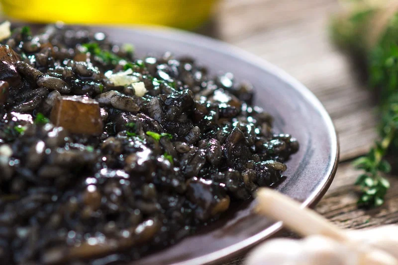

Black Risotto

Description
This black risotto recipe known as crni rižot in Croatian is fantastic if you like seafood. This dish has an intense seafood flavor and smell. It’s certainly not for those who don’t absolutely love seafood!
Ingredients
- 1 1/5 kilograms of cuttlefish & calamari
- 3 liters water (you may need more)
- 60 grams of unpeeled prawns
- 1 1/2 large onions diced
- 1/3 cup extra virgin olive oil
- 2-3 cloves of garlic, diced small
- 1/2 cup of white wine
- 1 1/2 cups of white rice (carnaroli is best)
- Salt & pepper
- 1-2 tablespoons Vegeta
- 50 grams butter
- 3 tablespoons chopped parsley
Steps
- Carefully remove and save the ink sack from the calamari without breaking it.
- Clean the calamari and cuttlefish, then cut them into small pieces.
- Place the calamari, cuttlefish, and prawns (in their shells) into a saucepan.
- Pour water over them until covered and bring to a boil.
- Reduce heat and simmer until the cuttlefish is tender (about 20-30 minutes).
- Drain the seafood, reserving the stock, and keep warm. Peel the prawns.
- Fry the onions in olive oil over medium heat until transparent.
- Add the garlic and cook for 1 minute, stirring constantly.
- Add the wine and half of the reserved seafood stock to the pan. Bring to a boil.
- Add the rice, season with salt, pepper, and Vegeta, and cook for 10 minutes over medium heat, stirring occasionally.
- Add the remaining stock, prawns, ink, calamari, and cuttlefish to the pan.
- Reduce heat to low and cook for 10-15 minutes or until the rice is cooked and the cuttlefish is tender. Stir occasionally.
- If needed, add more water to maintain a creamy consistency. Be sure not to overcook the rice; it should remain firm (al dente) and not gooey.
- Mix in the butter and sprinkle with fresh parsley before serving.
Home